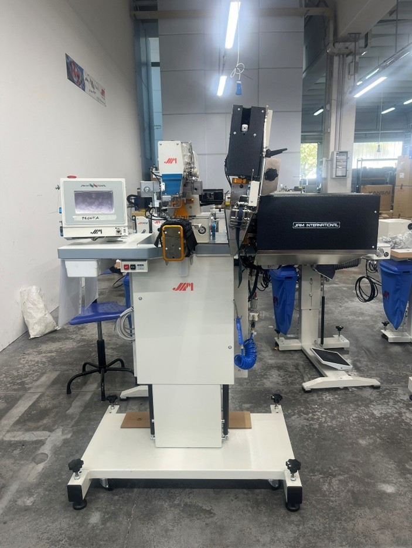
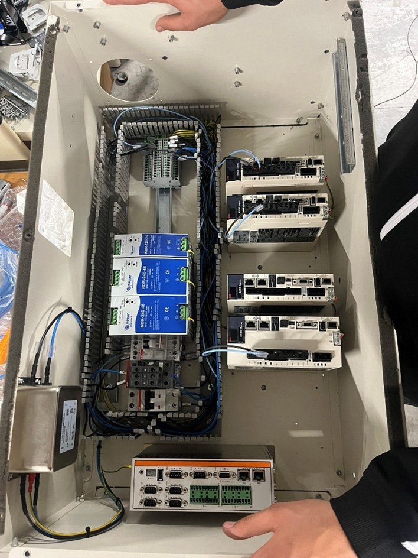

Nel quarto anno durante il mio stage presso Jam International ho avuto la possibilità di conoscere più da vicino il mondo del lavoro e capire come funziona un’azienda reale. Nel corso dell’esperienza ho svolto diverse attività pratiche, come programmare schede elettroniche, creare e saldare cavi, assemblare componenti delle macchine industriali e testare le schede per verificare che funzionassero correttamente. In alcuni momenti ho anche aiutato nella produzione, collaborando con gli altri lavoratori quando c’era bisogno di velocizzare il lavoro.
L’esperienza è stata molto pratica e concreta: gran parte del tempo veniva dedicata ad attività manuali e operative. Personalmente ho capito che questo tipo di lavoro non rispecchia completamente i miei interessi, perché preferisco attività più teoriche e meno manuali. Alcuni compiti erano molto ripetitivi e richiedevano soprattutto attenzione e pazienza, caratteristiche importanti ma che a lungo andare mi facevano perdere interesse. Nonostante questo, ho cercato comunque di impegnarmi seriamente e di imparare il più possibile da ogni attività.
Una delle difficoltà principali è stata anche l’organizzazione degli orari: dovevo svegliarmi molto presto la mattina e a fine giornata ero spesso molto stanco. Tuttavia questa esperienza mi ha aiutato a sviluppare maggiore senso di responsabilità, autonomia e capacità di adattamento. Ho imparato a collaborare con altre persone, a rispettare le regole di sicurezza e i tempi di lavoro dell’azienda, e a comprendere meglio cosa significhi lavorare in un ambiente professionale.
Anche se le attività svolte non erano sempre collegate direttamente alle materie che studio a scuola, considero questo stage molto utile per la mia crescita personale e professionale. Mi ha permesso di capire meglio quali tipi di lavoro mi interessano di più e quali invece si adattano meno alle mie caratteristiche e preferenze.
L’anno precedente, in terzo, abbiamo svolto 8 ore di formazione sul corso della sicurezza, durante le quali abbiamo imparato le principali norme da rispettare in un ambiente di lavoro. In particolare, ci sono state spiegate le regole fondamentali per prevenire gli incidenti, l’importanza dei dispositivi di protezione individuale e i comportamenti corretti da adottare in caso di emergenza.

